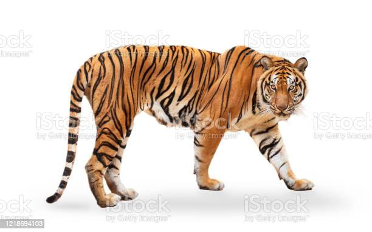
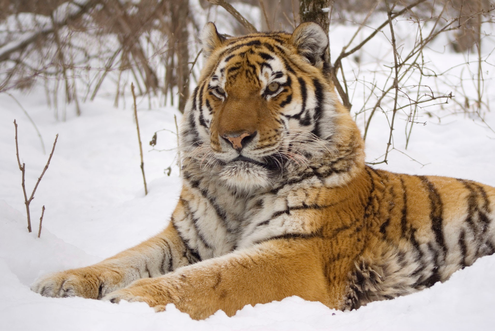

This page is about tigers of diffrent country
About
The tiger is the largest living cat species and a member of the genus Panthera. It is most recognisable for its dark vertical stripes on orange fur with a white underside. An apex predator, it primarily preys on ungulates, such as deer and wild boar. Wikipedia
Conservation status: Endangered (Population decreasing) Encyclopedia of Life
Scientific name: Panthera tigris
Length: 2.5 – 3.9 m (Male, Adult), 2 – 2.8 m (Female, Adult)
Mass: 90 – 310 kg (Male, Adult), 65 – 170 kg (Female, Adult)
Height: 80 – 110 cm (At Shoulder)
Speed: 49 – 65 km/h (In Short Bursts)
Tigers are found in amazingly diverse habitats: rain forests, grasslands, savannas and even mangrove swamps. Unfortunately, 93% of historical tiger lands have disappeared primarily because of expanding human activity. Saving tigers means saving forests that are vital to the health of the planet.
THERE ARE THE MANY TYPE OFF TIGERS
bangal tigerThe Bengal tiger is a population of the Panthera tigris tigris subspecies. It ranks among the biggest wild cats alive today. It is considered to belong to the world's charismatic megafauna. The tiger is estimated to have been present in the Indian subcontinent since the Late Pleistocene, for about 12,000 to 16,500 years.Today, it is threatened by poaching, loss and fragmentation of habitat, and was estimated at comprising fewer than 2,500 wild individuals by 2011. None of the Tiger Conservation Landscapes within its range is considered large enough to support an effective population of more than 250 adult individuals The Bengal tiger's historical range covered the Indus River valley until the early 19th century, almost all of India, Pakistan, southern Nepal, Bangladesh, Bhutan and southwestern China. Today, it inhabits India, Bangladesh, Nepal, Bhutan and southwestern China. India's tiger population was estimated at 2,603–3,346 individuals by 2018. Around 300–500 individuals are estimated in Bangladesh, 355 in Nepal by 2022, and 90 individuals in Bhutan by 2015 top
The Siberian tiger or Amur tiger is a population of the tiger subspecies Panthera tigris tigris native to the Russian Far East, Northeast China and possibly North KoreaSize: Length of the Siberian tiger body, without tail – 160-200 cm, length of tail about 100 cm. Weight of an adult animal can reach 300 kg. The largest weight recorded – 384 kg. top
 The Sumatran tiger is a population of Panthera tigris sondaica on the Indonesian island of Sumatra. It is the only surviving tiger population in the Sunda Islands, where the Bali and Javan tigers are extinct.Scientific name: Panthera tigris sumatrae
Family: Felidae
Kingdom: Animalia
Order: Carnivora
Phylum: Chordatatop
The Sumatran tiger is a population of Panthera tigris sondaica on the Indonesian island of Sumatra. It is the only surviving tiger population in the Sunda Islands, where the Bali and Javan tigers are extinct.Scientific name: Panthera tigris sumatrae
Family: Felidae
Kingdom: Animalia
Order: Carnivora
Phylum: Chordatatop
 The South China tiger is a population of the Panthera tigris tigris subspecies that is native to southern China. The population mainly inhabited the Fujian, Guangdong, Hunan and Jiangxi proSSvincesThe South China tiger is the smallest tiger subspecies with the exception of the Sumatran tiger. Males measure 230 to 265 cm (91 to 104 in) and weigh 110 to 175 kg (243 to 385 lb) top
The South China tiger is a population of the Panthera tigris tigris subspecies that is native to southern China. The population mainly inhabited the Fujian, Guangdong, Hunan and Jiangxi proSSvincesThe South China tiger is the smallest tiger subspecies with the exception of the Sumatran tiger. Males measure 230 to 265 cm (91 to 104 in) and weigh 110 to 175 kg (243 to 385 lb) top